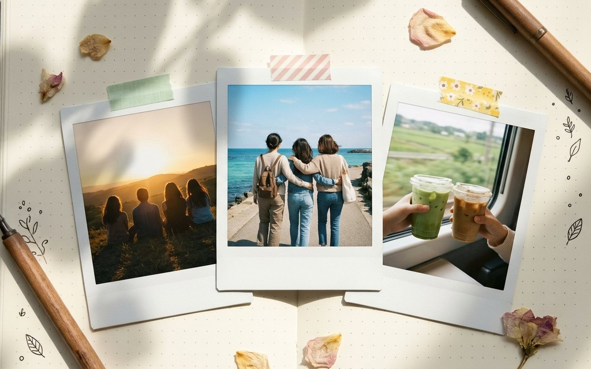
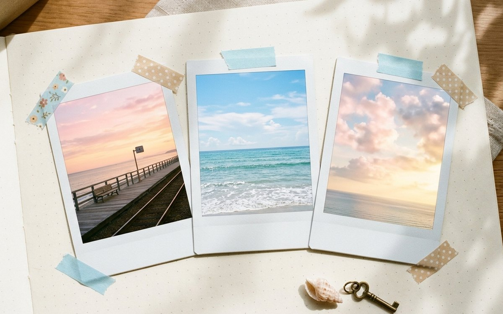
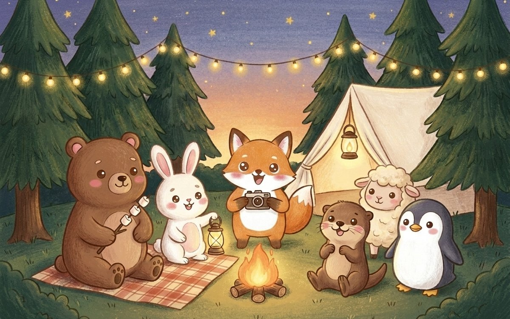

🌱 免費共享 ＋ ★ VIP 地圖
IDEA 05
👯 閨蜜／死黨旅行共享本
「每次旅行結束，大家的照片散在各支手機裡，催了一個月還是沒收齊…」
出發前開一本免費共享手帳，行程中每個人拍的卡片自動收進同一本，不用辦帳號也不怕漏傳。VIP 還能順便把這趟去過的城市點亮在足跡地圖上！
👥 免費共享手帳🗺️ 足跡地圖 (VIP)🎬 旅程小電影
不管是一群好友出國、一個人獨旅，還是生日露營派對，把照片、城市郵戳跟拍貼全收在一起，回家直接重溫整趟回憶。


🌱 免費共享 ＋ ★ VIP 地圖「每次旅行結束，大家的照片散在各支手機裡，催了一個月還是沒收齊…」
出發前開一本免費共享手帳，行程中每個人拍的卡片自動收進同一本，不用辦帳號也不怕漏傳。VIP 還能順便把這趟去過的城市點亮在足跡地圖上！

🌱 免費月曆 ＋ ★ VIP 地圖「一個人旅行步調很鬆，但晚上累到根本沒力氣打開筆記寫遊記。」
在車站、海邊、小巷口隨手拍一張，蓋上日期與城市郵戳就好。只記城市不存精確座標、保護隱私，走過的地方慢慢在足跡地圖上亮成一張專屬旅行海報。

★ VIP 暗房底片「聚會大家一直低頭挑照片、重拍十張，反而錯過當下最開心的互動。」
開啟「今晚才顯影」暗房模式，派對、露營或跨年當下只管開心拍，照片會先鎖在暗房裡；等到晚上回家或隔天早上再一起拆盲盒看洗出來的瞬間，超有儀式感！
「畢旅、成發、挑婚紗到宴客那天，每個角落的幕後花絮散落在不同人手裡。」
現場用韓系／日系四格拍貼跟好友大合照，再請伴娘團或社團夥伴把各自拍的幕後花絮放進同一本免費共享手帳，典禮結束就能整本珍藏、印成實體卡。
From bestie road trips and solo train rides to cozy camping nights and milestone parties, MoriSnap collects every snap, city stamp, and photo strip.
“After every trip, everyone’s photos stay trapped on five different phones for months…”
Create a free shared trip journal before takeoff. Everyone’s dated cards land in one book automatically—no accounts needed. Unlock VIP to light up every visited city on your Footprint Map.
“I love traveling solo, but I’m way too tired at night to write long travel blogs.”
Snap train windows, alleys, and ocean sunsets with one tap. MoriSnap saves only city names (never exact GPS) and builds a city-stamp Footprint Map as you wander.
“Everyone gets stuck checking and retaking photos instead of enjoying the night.”
Switch on Develop Tonight during birthdays, camping, or New Year’s Eve. Shoot freely in the moment—your photos stay hidden until tonight so everyone unboxes the memories together.
“Candid moments from dress fittings, grad trips, and receptions end up scattered everywhere.”
Snap fun 4-cut photo strips with your crew and let bridesmaids or classmates drop their behind-the-scenes snaps into one free shared keepsake album.
女子旅・ひとり旅・キャンプ・卒業式や結婚式まで。撮った写真も都市スタンプも、帰るころには一冊のアルバムになっています。
「旅行のあと、みんなの写真を送り合うのが面倒で結局集まらない…」
出発前に無料の共有手帳を作るだけ。それぞれが撮った手帳カードが自動で一冊に集まります。VIP なら訪れた街を足あとマップで振り返ることもできます。
「ひとり旅の夜は疲れて、長い旅行記を書く気力が出ない…」
駅や路地、海辺をパッと撮って日付と都市スタンプを残すだけ。記録するのは都市名のみで正確な位置は保存しないので安心。旅先が少しずつ地図に灯ります。
「撮るたびに画面チェックばかりして、その場の空気を楽しめない…」
「今夜現像」をオンにすれば、その場ではシャッターを切るだけ。夜になってから現像された写真をみんなで開く瞬間は、本物のフィルムのようなワクワク感です。
「卒業や結婚式のオフショットが、友人それぞれのスマホに散らばってしまう。」
かわいい 4 カットフォトをみんなで撮って、準備から当日までのオフショットを無料の共有手帳にひとまとめ。ずっと残る大切な記念帳になります。
친구들과 떠나는 여행, 혼자 떠나는 기차 여행, 캠핑 파티, 졸업식과 웨딩 준비까지. 찍기만 하면 추억이 알아서 한 권에 담겨요.
“여행 끝나고 사진 주고받다가 귀찮아서 결국 반도 못 모은 적 많죠…”
출발 전 무료 공유 다이어리를 만들어 두면 각자 찍은 카드가 한 권에 자동 정리돼요. VIP를 열면 함께 다녀온 도시들이 발자국 지도에 반짝반짝 채워집니다.
“혼자 여행하고 숙소에 돌아오면 피곤해서 긴 여행기를 쓸 힘이 없어요.”
기차역, 골목길, 바닷가에서 셔터 한 번이면 날짜와 도시 스탬프까지 끝. 정확한 좌표는 저장하지 않고 도시 이름만 기록해 안심하고 나만의 여행 지도를 채울 수 있어요.
“모임에서 사진 확인하고 다시 찍느라 정작 즐거운 순간을 놓치곤 해요.”
생일 파티나 캠핑, 연말 모임에서 ‘오늘 밤 현상’을 켜보세요. 현장에서는 마음껏 즐기며 찍고, 밤에 다 같이 현상된 사진을 열어보는 설렘이 진짜 필름 같아요!
“졸업 여행, 드레스 투어, 본식 비하인드 사진이 친구들 폰에 뿔뿔이 흩어져 있어요.”
감성 네컷 사진으로 친구들과 찰칵 찍고, 각자 담은 비하인드 컷을 무료 공유 다이어리 한 권에 모아두세요. 평생 꺼내 보는 소중한 기념 앨범이 됩니다.